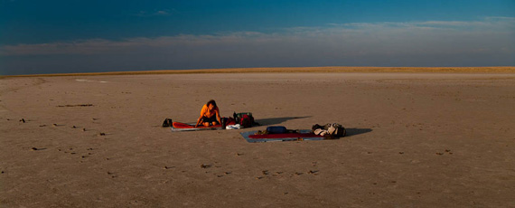
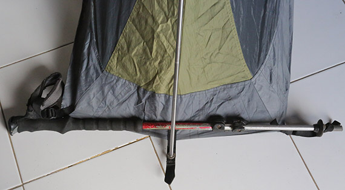

Comment choisir sa tente
Le choix de la tente est un problème épineux car il y a énormément de modèle allant de 30 à 800 €. Je livre ici les points qui me semble importants quand on fait un voyage à pied et de surcroît un petit budget. Car selon les pays cela nous peut nous ammèner à utiliser beaucoup la tente.
Les critères
autoportée
Lors d’un voyage au long-court les lieux de bivouac sont extrêmement diversifiés. Il me serait difficile de faire un top 3 des lieux les plus insolites tant ils sont nombreux. Dans ces conditions il est essentiel que la tente puisse être montée dans n’importe quelle condition. Pour cette raison Il est donc fortement conseillé qu’elle soit autoportée. Si elle ne l’est pas, Il est toujours possible de bricoler des points d’accroches quand on met la tente sur une dalle en béton par exemple mais si on doit renouveler l’opération tous les soirs ça peut vite devenir chiant.
habitacle indépendant
Une tente a deux fonctions, celle de se protéger de la pluie évidemment mais également celui de se protéger des insectes. On pense tous aux moustiques mais il y a une foule d’insectes plus ou moins venimeux qui partent en chasse au crépuscule. Dans les steppes du Kazakhstan on l’avait un peu oublié. Au mois de juin, nous savions que nous étions totalement à l’abri d’une averse éventuelle. Les moustiques eux avaient disparu depuis bien longtemps alors quand nous étions sur le sol totalement plat et régulier des lacs de sel temporaire nous avions commencé à dormir à la belle étoile. À la deuxièment nuit, j’ai eu une piqure de rappel quand un scorpion sera venu chercher abris sous mon mollet.

mousquitaire intégrale
Il arrive donc souvent qu’on veuille se protéger uniquement de la faune sans avoir à étouffer sous une toile étanche, il est donc important de posséder une tente à double habitacle et que l’habitacle intérieur puisse se monter de manière indépendante du double-toit mais également qu’il soit fait au maximum de moustiquaire. Assurant ainsi une respirabilité maximum et un gain de température minimum. Ce point est capital pour les tropiques. Pour les contrées froides il suffit de mettre le double toit et de toute façon pour s’isoler du froid c’est le duvet qui fait vraiment la différence.
Notre choix
Les tentes qui remplissent tous les critères ne sont pas légions surtout sous la barre des 200 €. C’est l’aspect moustiquaire intégrale qui limite grandement le choix. À ma connaissance par ordre de prix il y a:
1 Place
- nemesis 1 (Ferrino) - 145 € - 1,550 Kg
- Hubba Hubba (MSR) - 345€ - 1,370 Kg
- Fly Creek UL 1 (Bug Agnes) - 300€ - 940 g
2 Places
- nemesis 2 (Ferrino) - 170 € - 2,100 Kg
- chaos 2 (Ferrino) - 200 € - 2,150 Kg
- Fly Creek UL 2 (Bug Agnes) - 380 € - 1,050 Kg
A noter: que la Hubba Hubba est remplacé par la Hubba Hubba NX dont la surface de moustiquaire est ridicule. Et que dans les chiffres la Fly Creek UL est impressionnante mais ne l’ayant jamais testé ni même vu j’émets des reserves quant à ses performances et son endurance.
2 place: La Chaos 2
Comme je l’ai dit très peu de tentes proposent une surface en moustiquaire maximale. Et à l’époque où nous l’avions acheté elle était la moins chère de toute. Pour le prix son poids est très honorable. Pour rester dans la comparaison avec la Hubba Hubba 2 places de l’époque elle ne fait que 100 g de plus.
Lors de la traversée des steppes d’Asie centrale avec cette tente nous avons Passé des nuits très chaudes ( 30°C) et aussi extrêmement froide (-25°C). Dans les 2 cas elle s’est plutôt bien comporté. Suffisamment aéré pendant les nuits chaudes et isolant bien du vent qui peut être un sérieux problème lors des nuits glaciales du Kazakhstan.
Après plus d’un an et demi d’utilisation intensive les joints de coutures ont montré des signes de fatigues marquées et le revêtement en silicone du tapis de sol avait bien souffert et n’offrait plus qu’une maigre protection contre l’humidité.
Quand nous avons signalé à Ferrino, ils nous ont renvoyé une tente toute neuve au siège de l’association. Rien à redire Chapeau bas les gars.
Bon si on veut chercher la petite bête on peut signaler
- Des sardines un peu trop molles, une version en “coin” ou en section carré auraient été préférables.
- Légèreté oblige le tapis de sol de la tente est fragile et assez peu impermeable. Si vous plantez la tente sur la neige, ou un sol détrempé il faut faire attention à ce que votre sac de couchage reste bien sûr votre matelas!
- L’habitacle est un peu trop étroit. Deux barbus allongés dans le même sens se gênent manifestement. une disposition tète bêché et un peu plus confortable, mais il convient alors de disposer la tente sur un terrain très horizontal, sinon l’un des habitants va devoir dormir la tête en bas… pas super plaisant.
1 place: La nemesis 1
Ayant été pleinement satisfait par la Chaos 2 tant au niveau de la qualité/durabilité que du SAV quand je suis passé au mode solo j’ai naturellement orienté mon choix sur sa petite soeur la Némésis 1 qui est basée sur le même design. Et j’en aurais été sans doute pleinement satisfait si la portabilité du design entre les 2 modèles avait été fait le minimum de réflexion de la part des “ingénieurs” Ferrino.
C’est en effet une aberration que la némésis 1 possède exactement la même pièce de jointure des arceaux que sa grande soeur alors que sa largeur a été divisée par 2. Cela ne m’avait pas sauté aux yeux au début, j’avais juste été surpris de la force nécessaire pour bander les arceaux, mais je faisais confiance aux “ingénieurs” Ferrino et à leur maitrise de la science de contrainte des matériaux. Ma confiance ainsi que mes arceaux volèrent en éclats lorsque au 3ème montage ma tente s’écroula après 3 minutes de mise en tension des arceaux. Après avoir utilisé le manchon pour réparé j’ai persisté comme un con à suivre le mode d’emploi et une vingtaine de montages plus tard c’est l’autre branche de la structure qui se brisa.
j’ai dû faire le bricolage pour réduire la tension d’utilisation. En ajoutant des ficelles à chaque oeillet j’ai artificiellement rallongé la largeur de la tente. Mais se faisant la moustiquaire n’était que partiellement tendu réduisant l’espace vital déjà restreint à son minimum. Mais le plus embêtant était le double toit qui ne pouvait plus se placer correctement sur l’habitacle d’intérieur et rendait l’installation totalement perméable. Et j’ai tourné avec ce système bancal pendant plus d’un an. Merci Ferrino!
Je leur ai envoyé des mails qui sont resté lettre morte et j’ai dû batailler pendant des mois par mails interposés avec le vieux campeur qui a été jusqu’à me dire je cite: “étant une tente première prix (140€ quand même) elle n’est pas adaptée à votre expédition”. Au final ils ont quand même daigné me donner un jeu d’arceaux de rechange.
J’ai été étonné de ce mauvais SAV car d’habitude ils sont très efficaces. Ils avaient été impeccables pour le remplacement de la Chaos 2. À l’époque on leur avait juste envoyé des photos des jointures qui fatiguaient et ils avaient relayé l’info à Ferrino qui avait illico envoyé une tente de rechange alors qu’honnêtement je pensais pas que ça passerait car la tente avait quand même plus d’un an de voyage dans les toiles. Vous allez me dire aujourd’hui c’est la crise! C’est vrai, mais je pense surtout que comme les passages en garantie sont gérés par la boutique dans laquelle vous avez fait l’achat, il y a une grande disparité dans les politiques de SAV d’une boutique à l’autre.
Aujourd’hui je tourne toujours avec cette tente mais en bricolage 2.0 qui lui est tout à fait satisfaisant. Thierry m’a fabriqué une pièce de jointure sur-mesure en Téflon avec des angles de 80. Sacrée différence avec les 120 d’origine! En schintant un arceau sur chaque branche latérale le système tient la route. Toile intérieure est tendue et double toit se positionne bien. je peux de nouveau affronter la pluie sereinement.

Une version 2.1 du bricolage serait nécessaire car la matière plastique de la pièce fatigue trop rapidement et au bout d’une dizaine de montage un jeu est déjà apparu. je vais la refaire en alu avec un angle de 90 qui me semblerait optimum.
Sinon j’ai recours à une petite astuce pour tendre la toile intérieure au niveau des pieds qui normalement requière de planter les sardines. J’utilise un de mes bâtons de marche. Le système de blocage avec goupille me permet de facilement loger mon bâton dans les oeillets et de le bloquer en position ouverte de manière à tendre la toile.
